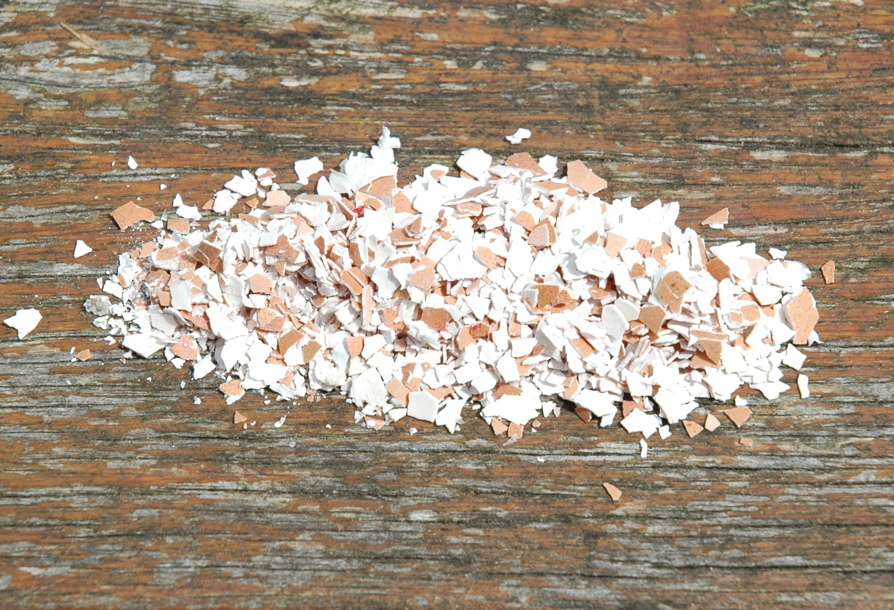

Our ostrich farm is established since October 2007. To the picturesque village - Raczka (Poland) came six ostriches. Over time, by gaining more and more experiences our farm was expanding constantly. Currently we have about 150 ostriches as young stock and livestock - 12 sires .
The increase in number of birds is made possible by the ongoing modernizations of the farm. In 2008, an additional pavilion for livestock was built. Actually, we also have a nursery with modern equipment for egg incubation and chick rearing room ( with underfloor heating ) .
It is worth to be mentioned ecological dimension of our farm. Ostriches are fed exclusively on grass fodder made from cereal crops of local farmers and high-protein greens. According to the recipes, created by experts. What is more, our farm is under control by District Veterinary Officer. Althought, birds are periodically examined for salmonellosis and avian influenza.
Ostrich meat
Ostrich eggs
Blown ostrich eggs

Half egg shells
Fragments of shell
Ostrich feathers
Ostrich leather
Quail eggs
quails

Ostrich meat

Ostrich meat is a red meat, but low in fat and rich in proteins. Meat can be used in any traditional red meat recipe to produce great tasting dishes!
Ostrich meat is a similar in colour and taste to beef. However, it is lower in fat grams per serving compared to chicken and turkey, and much lower in fat and cholesterol than beef. Most all of the meat from an Ostrich comes from the leg, thigh, and back (there is no breast meat!)
Ostriches have fat, but it collects outside the muscles and is easily removed during processing. Therefore, the cuts of meat are very lean with very low fat content.
Ideal for weight watchers who love red meat!
Ostrich eggs
Ostrich egg weighs about 1,650 g and contains approximately 1000 g of protein and 320 g egg yolks , acting in a large portion of valuable nutrients needed . The cholesterol content in the yolk is comparable to the cholesterol content of chicken egg .
It is worth noting large share of the ostrich egg yolk polyunsaturated fatty acid . In connection with the ostrich eggs compared to other eggs are more menus .
Blown ostrich eggs
| Perfect not only for Easter Egg, but also platter decorations, caskets and all craft works. | |
 |
 |
Half egg shells

The original headdress , flower pot , table decoration ? - Only the halves of the shells of ostrich eggs !
Fragments of shell
Shards of shells are used to produce the original jewelry and amulets of luck - because carry a shell ostrich egg is so powerful as wearing a piece of ivory !
Ostrich feathers

Ostrich feathers are the most luxurious feathers available, with fine flowing strands extending outward from the quill.
They are used both in the fine arts , decorative art and tailoring . Additionally, thanks to the antistatic abilities , they also used to remove dust . Moreover, ostrich feathers bring good luck (as opposed to peacock feathers ) !
Ostrich leather
Ostrich leather is considered as a luxury product. Leather is well known for its natural beauty, softness, flexibility and durability. Ostrich leather is unmistakable in its appearance; no other material looks similar to it. It is characterized by raised points that are localized to the center of the hide. The portion with these bumps is called the "crown". It's actually the back of the ostrich where the animal's neck meets its body. The bumps are quill follicles where a feather used to reside. On the left and right side of the diamond shaped crown the skin is quite smooth. In fact, only about 1/3 of the whole skin has quill bumps. Since the crown is the most sought after portion and since it constitutes such a small area of the skin, "full quill" ostrich products are considerably dearer when compared to bovine leather.
All of the most distinct leather goods can be made from ostrich leather - shoes, handbags, belts, wallets... a real touch of luxury!


Quail eggs

Quail eggs are speckled pearls that nature gives us.While quail egg is so small(10-12g),it is packed with many biologically active substances we need to be healthy.Their nutritional value is 3-4 times higher than that of chicken eggs.Quail egg contain 140g vitamin B1 compared to 50g in chicken eggs and twice as much vitamins A and B2. Quail eggs provide five times as much iron and potassium as chicken eggs. Quail eggs are specially useful for kids due to high content of iron,calcium, both omega-3 and omega-6 fatty acids.Moreover, the fats found in quail eggs help the body fully absorb vitamins and minerals.Quail egg is an optimal solution for kid's breakfast. Quail eggs provide a natural solution that helps maintain a normal calcium balance so they can eliminate and remove stones from liver,kidneys or bladder after regular consumption. Quail eggs can accelerate recuperation after blood stroke and help strengthen heart muscle. Quail eggs contain natural vitamins and proteins that are proven to increase sexual performance.When incorporated in your daily diet, they also give you energy. Quail eggs are low carbohydrate,low calorie food for keeping your blood sugar and cholesterol at a safe level. A key anti-aging benefit of the quail egg is its ability to strengthen the immune system thereby slowing down the aging of organs and increase your life span.As a food rich in antioxidants, the quail egg not only stimulates the immune system, it also protects the nervous system and promotes good memory. With Quail Eggs you get the high protein food that your muscles need.For people who need to lose weight, quail eggs allow to consider low carbohydrate diet without feeling guilty of adding excess fat and high cholesterol. Starting with its rich source of omega 3 fatty acids,quail eggs produce healthy skin cell membranes that retain moisture.As a result, you get plumper, younger looking skin.The Vitamin B content in quail eggs also contributes to skin moisture and smoothness by helping to release energy from food for skin metabolism.What is more, as an enriched source of Vitamin A,B and E, quail eggs are used in need of shiny and voluminous hair.Nutrients in quail eggs strengthen and improve hair from the inside out.That's why quail eggs are used for egg yolk facial and hair care masks. Already impressed by unbelievable quail eggs health benefits? Most people in Asian and in East-European countries such as Poland,Latvia,Ukraine and Russia consume fresh quail eggs raw to promote health.it is considered in Eastern Europe that fresh quail eggs can be an alternative medicine to many diseases such as gastritis, anemia, bronchial asthma and many others.Also quail eggs can be eaten fried or boiled or as omelette.
Quails

We sell quails at all ages starting from day old chicks but usually 6 week old when they are just about to start laying. If you want to buy younger quails please ask for availability. Good deal on large orders.
Quail meat is a sweet and delicate white game meat with extremely low skin fat and low cholesterol value. Quail meat is rich in micronutrients and a wide range of vitamins including the B complex, folate and vitamin E and K. It is therefore recommended for people with high cholesterol levels and those who want to maintain a low level of cholesterol.


{kind=link}
{kind=link}
{kind=link}
{kind=link}
{kind=link}
{kind=link}
{kind=link}
{kind=link}
{kind=link}
{kind=link}
{kind=link}
{kind=link}
{kind=link}
{kind=link}
{kind=link}
{kind=link}
Quails

| info | Ferma Strusi Afrykańskich |
| adres | Rączka, 648-317 Korfantów |
| fermastrusi@gmail.com | |
| tel | +48 530 086 057 |
| http://www.yourmapmaker.com |